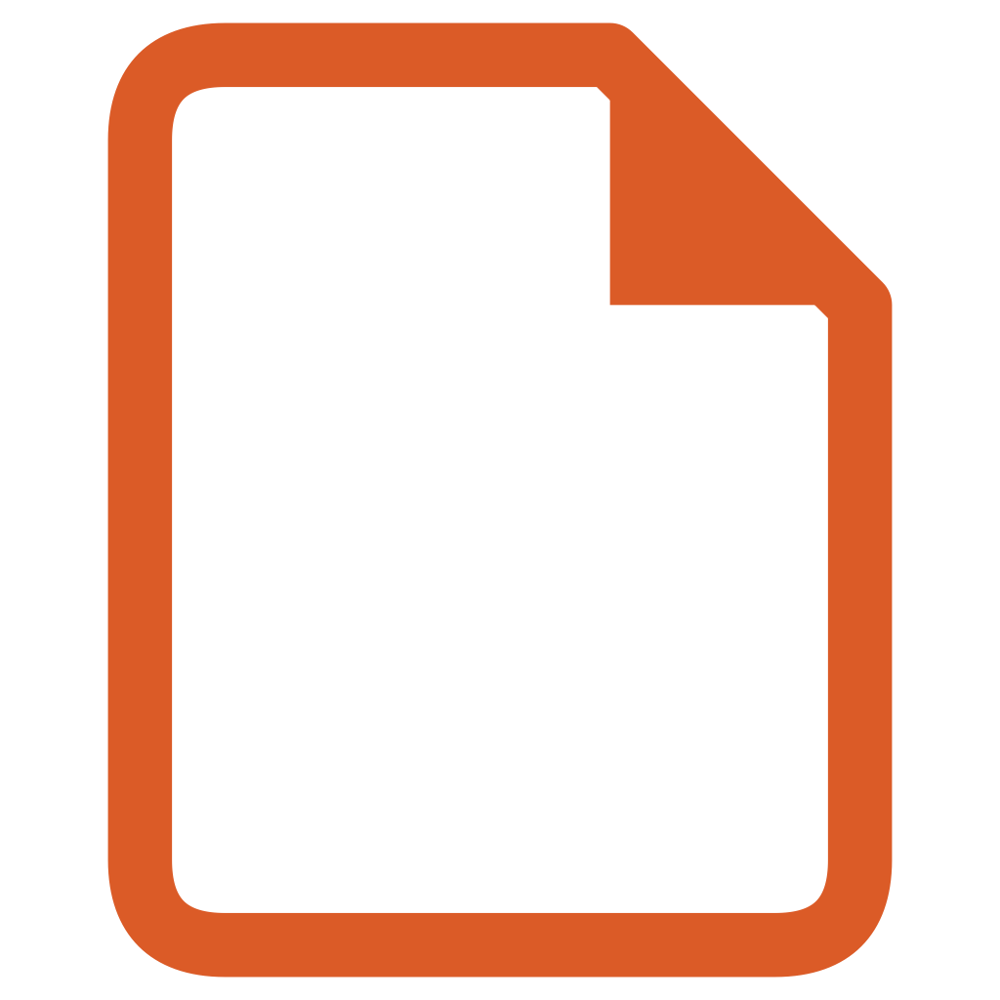

SETTINGS
ClipNest
Choose where clips go and configure each destination.
General
Notion
ClipNest uses your existing Notion browser session to find the workspaces available to your account.
Checking Notion…
Looking for your Notion browser session.
Fields
Choose which Notion properties this preset uses and which ones appear while clipping.
Title
Filled from the current page title.
URL
Filled automatically from the current page URL.
Automatic
Tags
Uses a Notion multi-select property.
Obsidian
Choose the root of your Obsidian vault. Chrome stores the folder handle locally and writes Markdown directly into the vault.